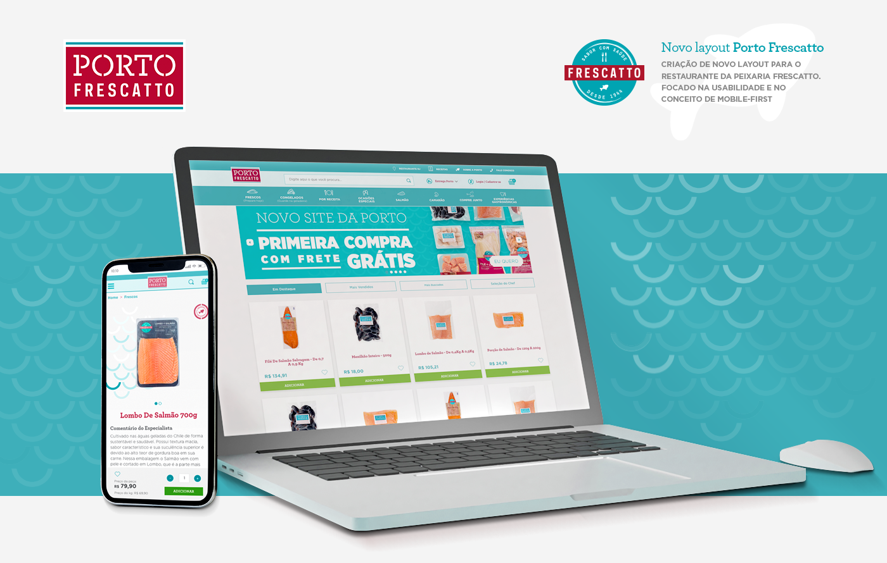
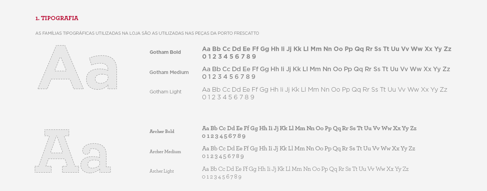
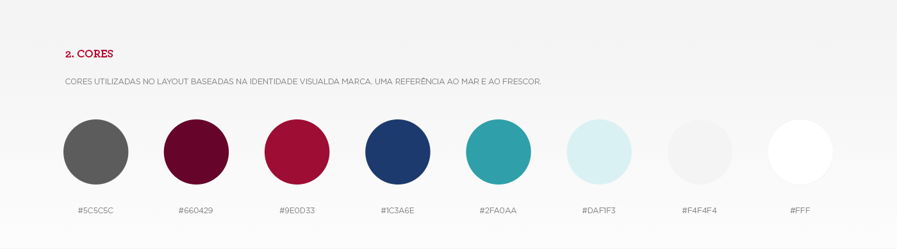
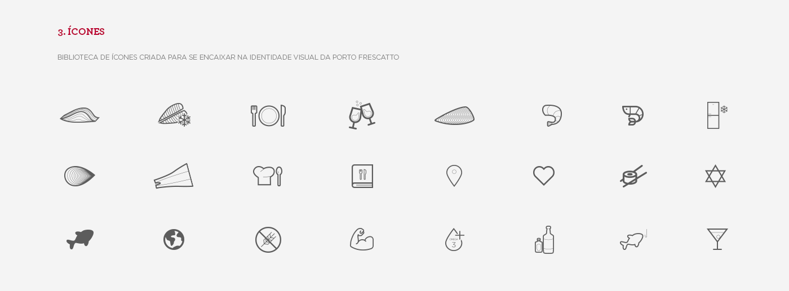
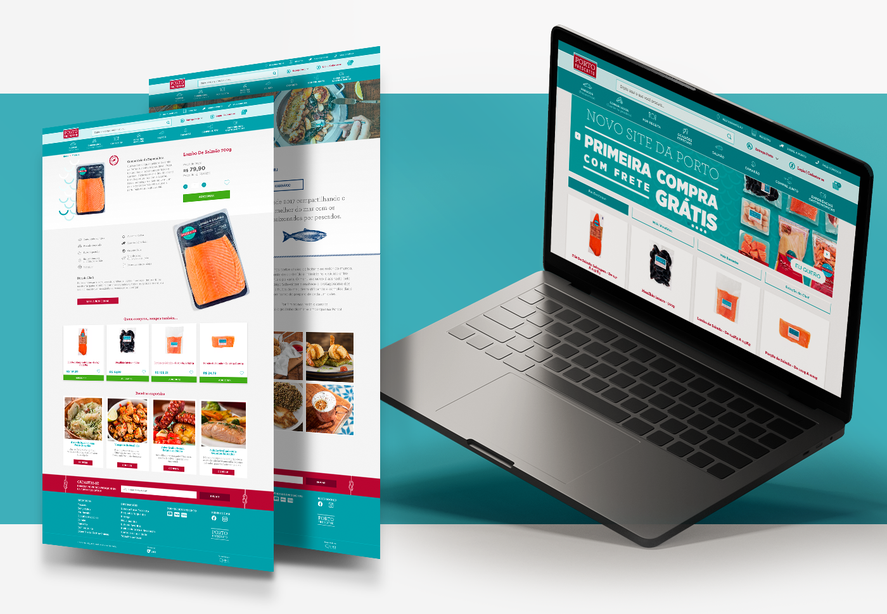
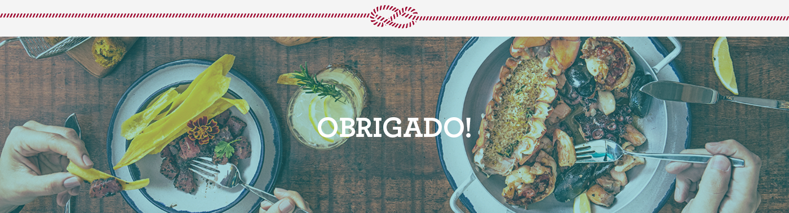

Porto Frescatto
Brand identity and e-commerce experience for one of Brazil's premium seafood brands.








Brand identity and e-commerce experience for one of Brazil's premium seafood brands.





